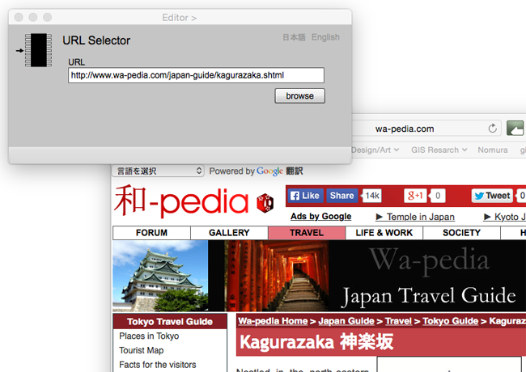

URL Selector
URLの選択とブラウズ
このページは，Editor ページとの連携のもとで，地物や関連のインスタンスを説明するURLを属性とするためにあります．gittok では，URLは仮想空間上のアドレスであり，場所属性としています．ここではまず，このページの操作手順を説明します．次にに表示欄とボタンそれぞれについて，説明します．
操作手順
1. 該当するURLを，操作画面のURLに入力，またはコピー＆ペーストする．
2. browse ボタンを押すとウェッブページが開くので，確認できる．
4. Editor ページのAttribute ID Value List の下にあるaddボタンを押すと，URLの値が，value欄に現れ，地物の属性になったことが分かる．
操作画面

表示欄
URL （編集可能）
該当するURLをここに入力，またはコピー＆ペーストする．
ボタン
browse
URL で示されるWebページをブラウザー上に表示する．
日本語
今あなたが読んでいるドキュメントが表示されます．
English
You can read the tutorial written in English.